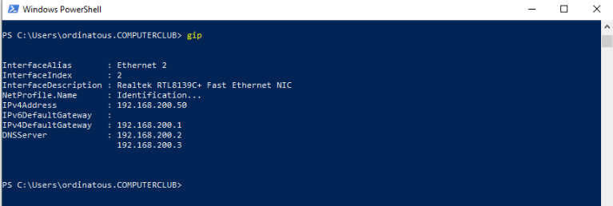

Vérification d’usage
Dans un premier temps , on vérifie la configuration IP de la machine , et on veille à ce que ce soit le bon DNS qui réponde.

Pour cela utiliser l’ancien panneau de configurations , et ne pas passer par l’icone réseau en bas à droite .
En powershell
Une méthode simple et efficace :
- lancer powershell en mode administrateur , entrer cette commande:
Add-Computer -Domain computerclub.lan

Un prompt s’ouvre , utiliser un compte administrateur du domaine pour l’intégrer, ou celui de l’utilisateur , s’il est déjà créé dans le domaine.

Puis redemmarer la machine pour valider avec cette commande.

Restart-Computer
Ce travail est sous licence Attribution-NonCommercial 4.0
International.